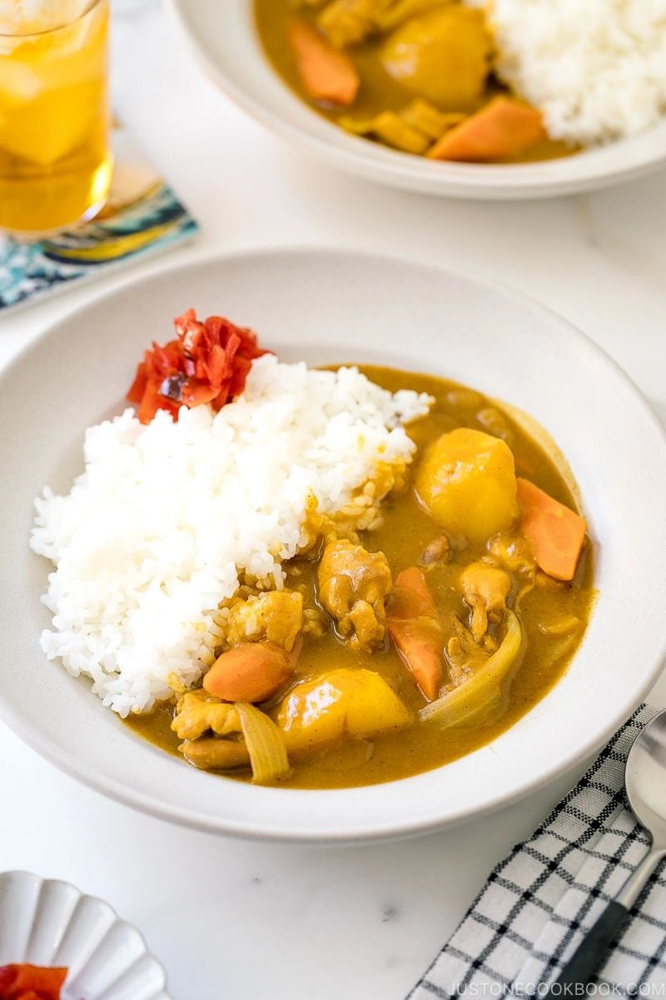

Japanese Curry

About this recipe
Japanese curry is one of the most popular dishes in Japan. The very common "curry rice" is most often referred to simply as "curry" (カレー, karē).
Along with the sauce, a wide variety of vegetables and meats are used to make Japanese curry. The basic vegetables are onions, carrots, and potatoes. Beef, pork, and chicken are the most popular meat choices.
Ingredients
- ]1½ lb boneless, skinless chicken thighs
- ¼ tsp kosher or sea salt
- freshly ground black pepper
- 2 carrots
- 2 onions
- 3 Yukon gold potatoes
- 1 knob ginger (you will need 1 tsp grated ginger)
- 2 cloves garlic
- ½ apple
- 1½ Tbsp neutral-flavored oil
Steps
- Gather all the ingredients. Please read my blog post on the “secret ingredient” we add to the curry. For this recipe, I add ginger, garlic, apple, honey, soy sauce, and ketchup.
- Cut the onions into wedges. I like to have the texture of the onions in my curry, so I cut them into thick wedges. If you prefer, you can mince or thinly slice the onions so they disintegrate into the sauce.
- Peel the carrots and cut them into rolling wedges (it's called rangiri in Japanese). This type of cut creates more surface area, which helps the carrots absorb more flavor and cook faster.
- Peel the potatoes. Cut each potato into quarters (6 pieces for russet potatoes). Soak them in water for 15 minutes to remove excess starch.
- Grate the ginger. You will need 1 tsp of grated ginger, including the juice. Mince the garlic and set aside.
- Cut the apple into quarters, remove the core, and peel the skin. Grate the
- ut off the extra fat from the chicken and discard it. Then cut the chicken into bite-sized pieces. I recommend cutting it diagonally (it's called sogigiri in Japanese) to create more surface area and flatten each piece so it cooks faster. Season with salt and pepper.
- Heat the oil in a large pot over medium heat and add the onion.
- Sauté the onions, stirring occasionally, until they become translucent and tender, about 5 minutes. Don't stir the onions too often because they won’t develop a golden color. Cooked onions add amazing flavor, so we do not want to skip this step. If you have an extra 5 minutes, definitely caramelize the onions!
- Add the minced garlic.
- Add the chicken and cook, stirring frequently, until it's no longer pink on the outside. If the onions are getting too brown, reduce the heat to medium low temporarily.
- Add the chicken stock. Alternatively, you can use water only or use half stock and half water if you're using store-bought curry roux, as it can be too salty.
- Add the grated apple, honey, soy sauce, and ketchup.
- Add the carrots and potatoes. The broth should barely cover the ingredients. Don't worry; we don't want too much liquid here, and additional liquid will be released from the meat and vegetables.
- Simmer, covered*, on medium-low heat for 15 minutes, stirring occasionally. *Simmer uncoveredb if the ingredients are completely submerged in the broth.
- Once boiling, use a fine-mesh strainer to skim the scum and foam from the surface of the broth.
- Continue to cook covered until a wooden skewer goes through the carrots and potatoes.
- Turn off the heat. Put 1-2 cubes of roux in a ladleful of cooking liquid, slowly let it dissolve with a spoon or chopsticks, and stir into the pot to incorporate. Repeat with the rest of the blocks, 2 cubes at a time.
- Simmer, uncovered, on medium-low heat, stirring frequently, until the curry becomes thick, about 5-10 minutes. If your curry is too thick, you can add water to thin the sauce. When you stir, make sure that no roux or food is stuck to the bottom of the pot; otherwise, it may burn.
- Serve the curry with steamed Japanese short-grain rice on the side. If you like, garnish with fukujinzuke.
Information sourced from: Just One Cookbook and Wikipedia.